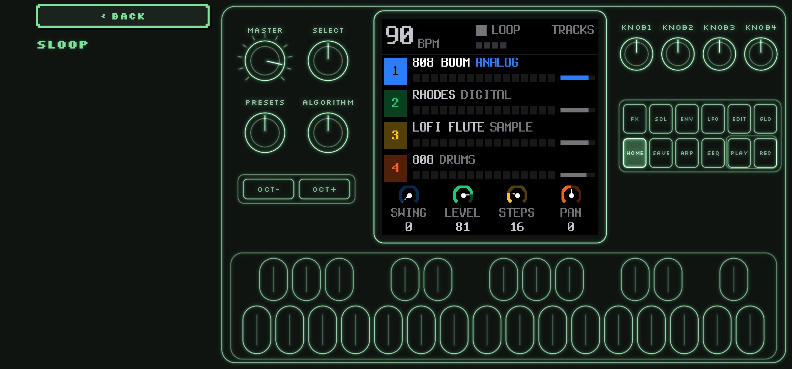
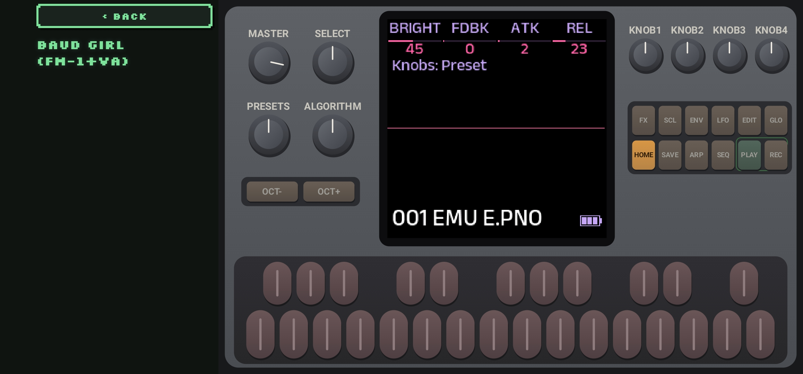

Install
The file to install is FM-1-Swap.apk from the GitHub release linked above. It is the release build. The phone needs Android 8 or newer. A computer emulator will not see a USB FM-1.
- Download the APK on the phone, or copy it across.
- Open it and allow install from the browser or the files app when Android asks.
- If an older debug build is already installed, uninstall that first. Its name is the same, but Android treats it as a different app, so this file will not update over it.
- After that, a newer download from the same release installs over this one.
Install that file from this GitHub release and nowhere else. The key that signs it is the one used to build the release, so a file from somewhere else could be accepted as an update.
The first time the app opens, it shows a short notice and waits a few seconds before OK can be pressed. The same notice stays on the SETUP screen.
Risks
Writing firmware replaces what is running on the FM-1. Projects, samples, and presets on the device can be gone afterwards. Some firmwares can be started again from the panel if a write fails. Some cannot.
- Stay in the app, and leave the cable in, until it says it finished. An install takes about a minute. The screen stays awake.
- If the write is interrupted after the FM-1 has restarted into its update loader, leave it plugged in and press RESUME with the same firmware. It waits in that loader until a write finishes.
- If a firmware does not start on the virtual FM-1, the flash sheet shows a red warning. CONTINUE stays off until you check I UNDERSTAND. SKIP CHECK writes without waiting for that start check.
- Official V15 and Felucca 1.6.1 have no USB recovery gesture. Holding OCT− while switching those on starts them normally.
- If the FM-1 will not start at all, this app cannot repair it. Recovery then needs a computer. See Recovery.
The four screens
The bar along the bottom is DEVICE, FIRMWARE, SAVED, and SETUP. The top line shows whether a real FM-1 is connected, and the name it reports, such as FM-1_900.


A few lines of helper text in the older photos have been shortened since those pictures were taken. The controls are the same.
DEVICE
Plug the FM-1 into the phone with a USB cable. No extra driver. Straight into the phone is best; hubs often hide it. Close other MIDI apps first. With the app closed, the phone can ask whether to open it. If it also asks to allow USB, allow it. SCAN looks again.
When the FM-1 answers, the big line is the name it reports. PLAY TEST NOTES sends a short C–E–G–C. If you hear it, notes are getting through. Some firmwares, such as SLOOP, stay quiet on a plain note. The FM-1 answering again afterwards means the cable is fine. The keys under that send notes while you hold them.
If several firmwares report the same name, the screen says so, because the device itself cannot tell them apart. If the FM-1 is sitting in its update loader after an interrupted write, the screen says that and sends you to SAVED to finish.
When the device is running official V15, DEVICE can restore V15's 128 factory voices over all four banks. That replaces every voice in them, including ones you made. V15 cannot read the old voices back first.
FIRMWARE
This is the list of firmwares. It comes with the app, so you can read it with no connection. REFRESH gets a newer list. Search is above the rows. SORT orders them by your list, popularity, name, author, or newest.
FAVORITE marks a firmware. FAVORITES shows only the ones you have marked. On a firmware's page, EARLIER and LATER change its place among those marks, and pressing FAVORITED removes it. The list opens with Baud Girl, SLOOP, Clipper, Rustypawz HYP-1, Felucca, and Felucca Rainbow at the top. Favorite any of those, or any other firmware.
Open a row for a description, a screenshot when the publisher has one, and TRY, SAVE, and FLASH. SAVE keeps a copy on the phone. FLASH writes a connected FM-1, and saves the file first if it is not already there. Neither opens TRY. Official firmware is marked, and beta firmware is marked. Beta rows can be hidden under SETUP. Listings with no file to install are hidden unless you turn that on.
The detail page also says what the device will report, how big the file is, and whether that firmware has a USB recovery gesture.
SAVED
Firmwares you save stay on the phone, including for later use with no network. TRY plays one. FLASH writes it to a connected FM-1. IMPORT brings in a firmware file from the phone. REMOVE deletes one you saved. Official V15 ships with the app and is kept even if you clear the rest.
Backups taken before a flash are listed here, with RESTORE and REMOVE.
Hear it before you write it
TRY plays the firmware on a virtual FM-1. Sound comes from the phone. Tap keys and buttons, including several at once. Drag a knob up or down to turn it. MASTER is the volume. Turn the phone sideways for a larger panel. The clock and notification icons move off the screen. What you save on that virtual instrument is kept for that firmware. A USB MIDI keyboard plugged into the phone plays too. Official V15 listens on channel 2, and Felucca on channels 1 to 4. The FM-1 already connected for flashing is left alone.
By default the panel is drawn as glowing lines in the colour you pick under SETUP. Turning that off shows a realistic panel. The firmware's own screen is the same either way.
TRY runs at the same speed as a real FM-1. If the sound gaps, or the phone struggles, SETUP can offer 100, 160, and 240. The choice is remembered per firmware. Lower it when the phone cannot keep up.
Leaving TRY always stops it. If RUN EMULATOR IN BACKGROUND is on, it keeps sounding when you switch away or the screen turns off, until you leave TRY. Turning the phone does not stop it.
Some publishers also offer their own player. When they do, the TRY screen has AUTHOR'S EMU, which opens that in the browser. Official Open is one of these: it often does not get going on the virtual FM-1, and M-VAVE's own player can run it.
With SAVE WHAT YOU TRY on, TRY keeps the firmware under SAVED. Off, it does not. A firmware already on the phone is not downloaded again. SAVE on the firmware page, or on the TRY screen, keeps a copy either way.




Flashing
FLASH asks before it writes. On a firmware page it is next to TRY and SAVE, and it saves the file first when the phone does not have it yet. The sheet names each step, usually just the firmware you chose. The line under the name during the write is what was running, then what is being written, such as SLOOP going to Rainbow Mode.
The sheet can check whether the firmware starts on the virtual FM-1. SKIP CHECK writes without waiting for that. A firmware that already failed the check still shows the red warning.
Stay on that screen until it finishes. If the cable comes out after the FM-1 has restarted into its update loader, plug it back in and press RESUME. If it never got that far, the FM-1 should still start as it did before.
Some firmwares have to be installed by way of the official firmware first. The sheet says so when the official firmware is not saved yet. ALWAYS VIA OFFICIAL FIRMWARE under SETUP makes every install take that path.
Switching to a different firmware can erase projects and samples. When this app can take a backup, it does that before the write and will not start the write if the backup fails. When it cannot, you have to confirm that you already backed up in that firmware's own editor.

Backups
Before a write, when the running firmware allows it, FM-1 Swap saves a copy on the phone.
- FM-1+VA, the Baud Girl range, gives its 128 presets and 16 patterns, plus a copy of the firmware if that file is already on the phone.
- Felucca gives the music now playing, the projects, your presets, settings, and samples. The FM6 voice bank is included only when that firmware lists it. If you already keep Felucca's own backup, hold onto that too.
- SLOOP gives the projects, presets, FM6 bank, samples, and settings.
RESTORE writes that backup back. Keep the cable connected, and stop playback on the FM-1. A restore replaces what the instrument is holding. Official V15, the update loader, and firmwares that never answer a backup request do not get an automatic copy. Those ask you to confirm you have backed up yourself.
If it will not start
Some firmwares can be started in USB recovery, then given a firmware from SAVED.
| Firmware | How to reach USB recovery |
|---|---|
| SLOOP, Clipper, Dinghy, Etch, Floyd, Ghoulbox, Jangada, WinampFM, ZP12, and the SLOOP banks and DX builds | Hold OCT− while switching on. |
| Melodee, from 1.3.5 | Hold OCT− while switching on. |
| ChoralRoot, from 0.16 | Hold OCT− while switching on. |
| HYP-1, FuMi-1, FiMba-1, LOF-1, ECO-1, GRAV-1 | Hold OCT− and OCT+ for 5 seconds while it is already running. |
| Official V15 | No USB recovery. Holding OCT− while switching on starts it as usual. |
| Felucca 1.6.1 | No USB recovery. Holding OCT− while switching on starts it as usual. |
If the FM-1 will not start at all, not even in USB recovery, FM-1 Swap cannot help. A computer that sees a USB device with UBOOT in the name, such as WL80UBOOT, is seeing the chip's own download mode. Tools built on jl-uboot-tool can put the official firmware back. Melodee, FuMi-1, and Hortator are among the firmwares that publish one, with instructions. If the chip never gets that far, recovery needs an FM-1 Transporter. This app has not tried either.
Setup
- COLOUR is green, amber, ice, rose, or paper. Glow, scanlines, and flicker are the screen look. Reset look puts them back.
- PHOSPHOR EMULATOR PANEL draws the virtual FM-1 as glowing lines. Off is the realistic panel.
- CHOOSE EMULATOR CLOCK shows 100, 160, and 240 on the TRY screen.
- RUN EMULATOR IN BACKGROUND keeps TRY sounding when you leave the app, until you leave the TRY screen.
- USB MIDI is a real FM-1. SIMULATED FM-1 is not a synth. It stands in for an FM-1 so you can practice a flash with no instrument connected. The extra switches under it, such as interrupting a pretend flash, apply only to that stand-in.
- ALWAYS VIA OFFICIAL FIRMWARE installs the official firmware on the way to the one you chose, when you are not already installing official firmware.
- SHOW BETA RELEASES includes firmwares marked beta. Ones you have kept stay visible either way.
- SHOW LISTINGS WITHOUT A PACKAGE includes rows that link out but have no file to save or flash.
- SAVE WHAT YOU TRY keeps a firmware under SAVED when you press TRY.
Patches
The app has a PATCHES screen, and the same banks are on the patches page. SEND plays one patch on a connected FM-1. SEND BANK sends all 32, and you choose which bank on the FM-1 they replace. Official V15 holds a single patch until you press SAVE. FM-1+VA edits the preset you have selected. Official Open takes one patch onto its DX7 track.
The banks here are the FM-1's own four, captured by KingParamount and shared as DX7 banks, and Aquanode's CC0 banks. Yamaha's cartridge banks are on fm1-editor.com.
What has been tried on a real FM-1
FM-1 Swap has been used to swap firmwares on a real FM-1, including SLOOP, Felucca Rainbow, and Clipper. Those swaps completed. One of them started on SLOOP 2.7.1, which reported FM-1_900. FM-1 Swap wrote Rainbow Mode 1.1.5-rb, and the FM-1 came back reporting FM-1_911.